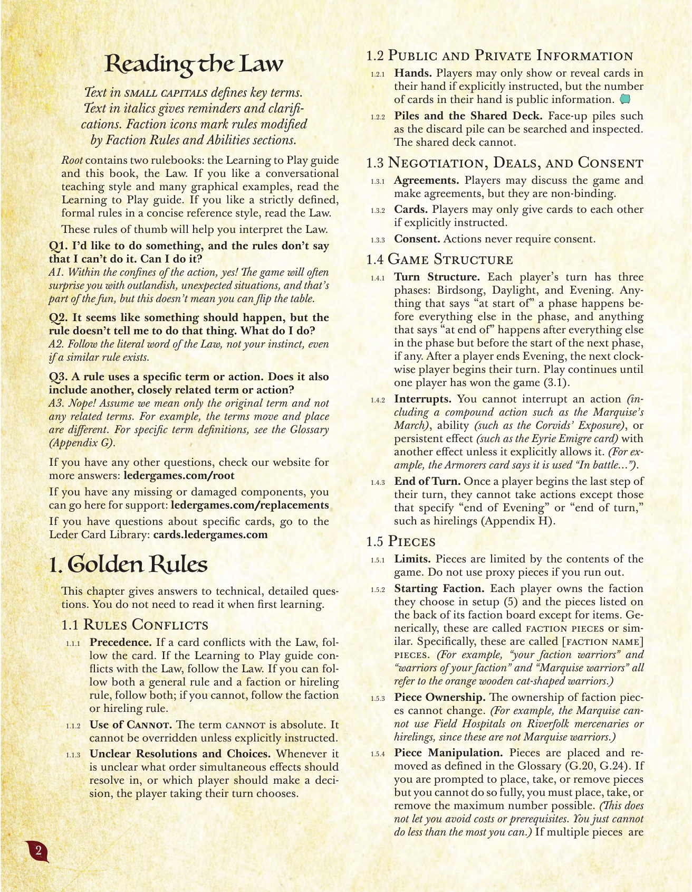
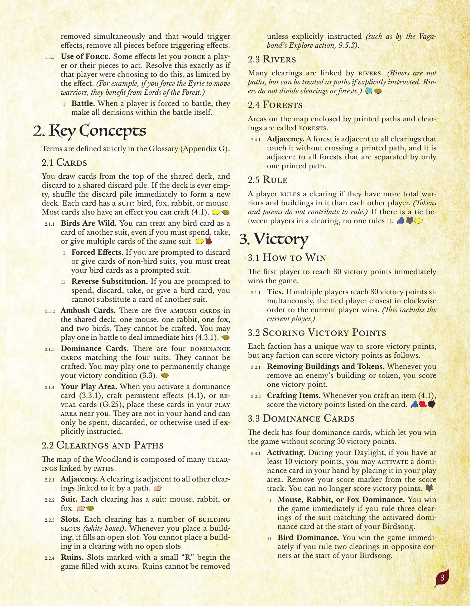
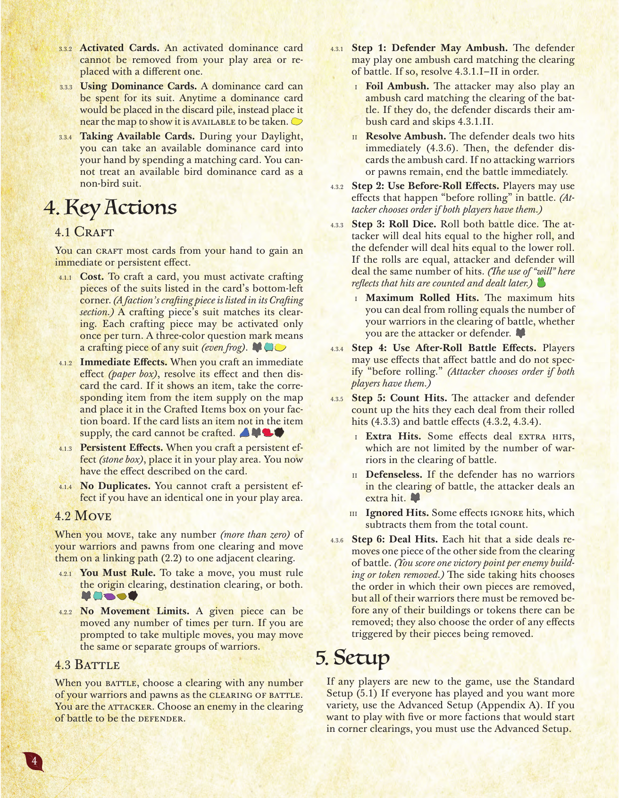
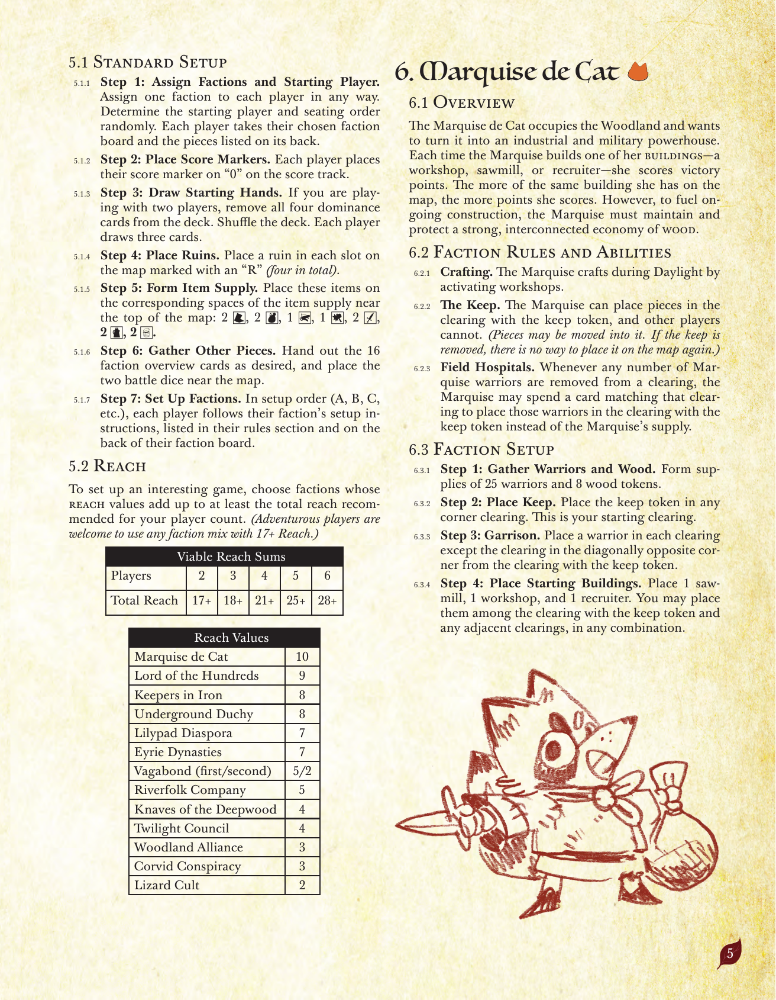
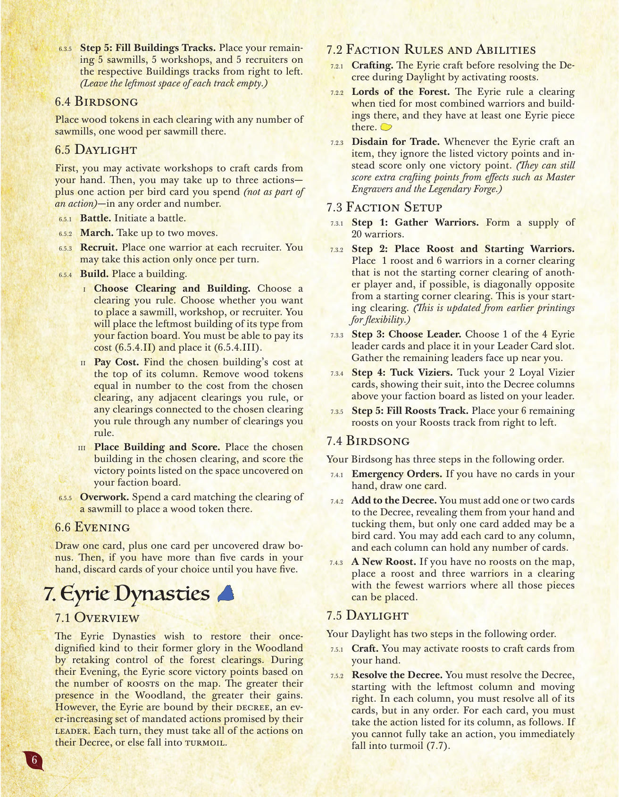
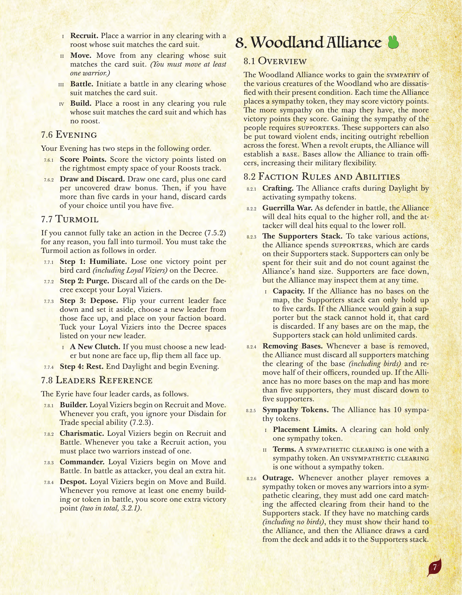
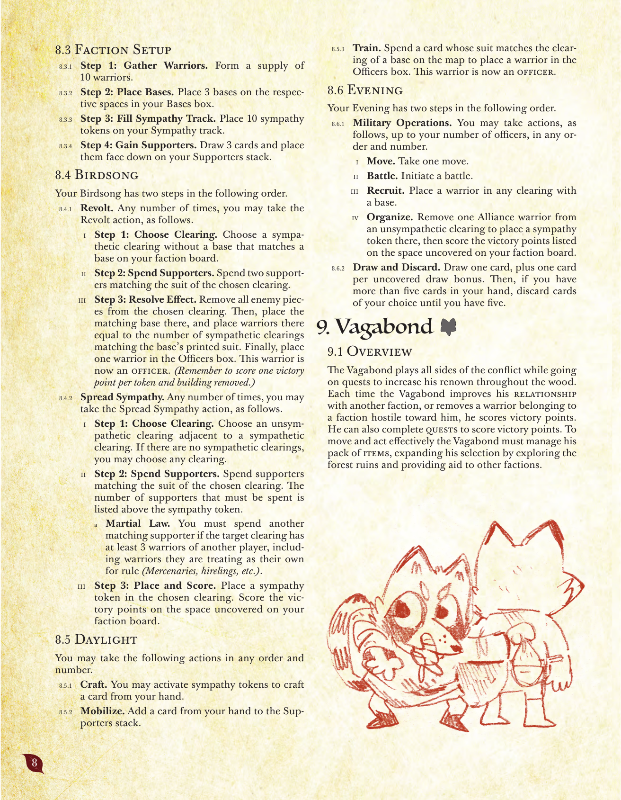
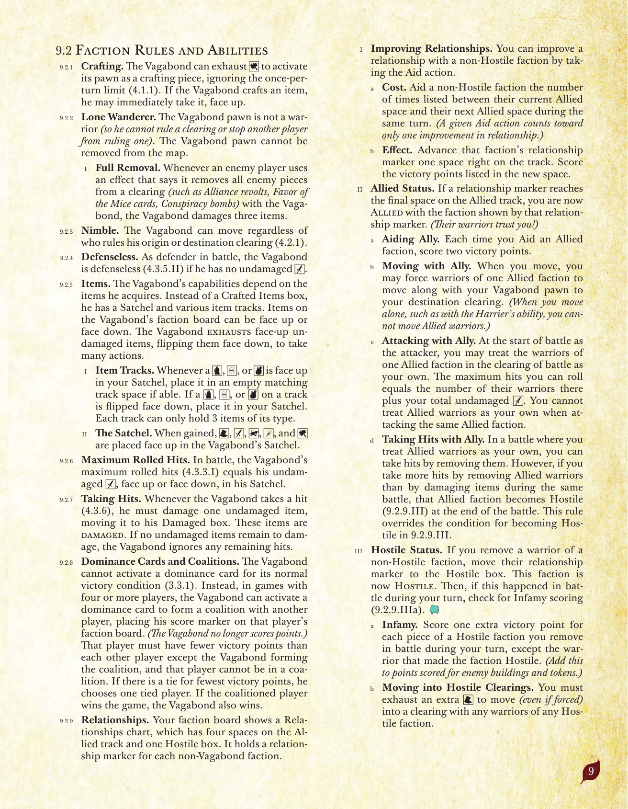
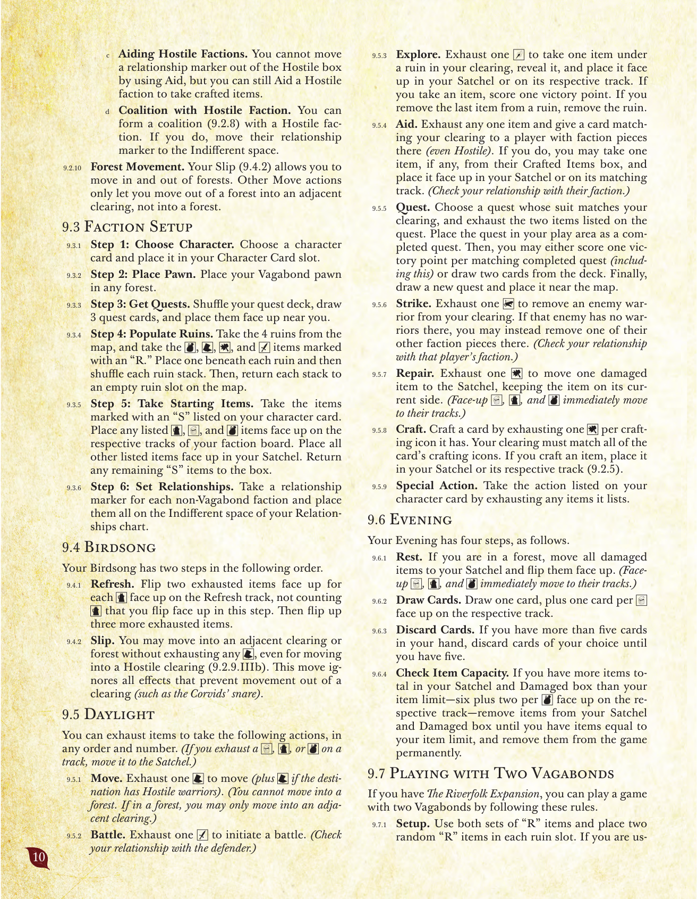

原題: The Law of Root（2025年10月13日版）／ Leder Games 発行／全18派閥を収録する包括的マスタールールブックのうち、第1〜9章（黄金律〜放浪部族）を収録。
小型大文字で書かれた文章は重要用語の定義を示す。イタリック体の文章は注意点や補足を示す。派閥アイコンは、その派閥の「派閥固有のルールと能力」の節によって変更されるルールを示す。
『ROOT』には2冊のルールブックが付属する。「入門ルールブック（Learning to Play）」と、本書「法典（The Law）」である。会話調の解説と豊富な図解を好むなら入門ルールブックを、厳密に定義された簡潔な参照形式のルールを好むなら本書「法典」を読むとよい。
以下のルール解釈の指針は、法典を読み解く助けになる。
Q1. あることをしたいのだが、ルールには「できない」と書かれていない。それをしてもよいか？
A1. そのアクションの範囲内であれば、よい！ このゲームはしばしば突飛で予想外の状況によってプレイヤーを驚かせるが、それこそがこのゲームの醍醐味の一部である。ただし、これはテーブルをひっくり返してよいという意味ではない。
Q2. 何かが起こるべきだと思うのだが、ルールにはそうするよう書かれていない。どうすればよいか？
A2. 似たようなルールが存在する場合でも、自分の直感ではなく法典の文言に厳密に従うこと。
Q3. ルールが特定の用語やアクションを使っている。それは別の、近い意味を持つ用語やアクションも含むか？
A3. 含まない！ 元の用語のみを意味すると仮定し、関連する別の用語は含めないこと。例えば「移動する（move）」と「配置する（place）」は異なる用語である。個々の用語の定義については用語集（付録G）を参照。
その他の質問がある場合は、公式サイトで回答を確認できる: ledergames.com/root
コンポーネントの欠損・破損があれば、こちらでサポートを受けられる: ledergames.com/replacements
特定のカードに関する質問は、Leder Card Library を参照: cards.ledergames.com

この章は、技術的かつ詳細な質問への回答を示す。初めて学ぶ際にはここを読む必要はない。
用語は用語集（付録G）で厳密に定義されている。
共有デッキの一番上からカードを引き、共有の捨て札置き場に捨てる。デッキが空になった場合は、直ちに捨て札置き場をシャッフルして新しいデッキとする。各カードには鳥・狐・兎・鼠のいずれかのスート（柄）がある。ほとんどのカードには、クラフト（4.1）できる効果も記載されている。
森の地図は、道でつながれた多数の開拓地で構成されている。
多くの開拓地は河でもつながれている。（河は道ではないが、明示的な指示があれば道として扱うことができる。河は開拓地や樹林を分断しない。）
印刷された道と開拓地によって囲まれた地図上の領域を樹林と呼ぶ。
あるプレイヤーが、ある開拓地において他のどのプレイヤーよりも多くの兵士と建物の合計を持っている場合、そのプレイヤーはその開拓地を支配する。（トークンと駒は支配の計算に加わらない。）ある開拓地で複数のプレイヤーが同数で並んでいる場合、誰もその開拓地を支配しない。
最初に勝利点30点に到達したプレイヤーが、即座にゲームに勝利する。
各派閥には独自の勝利点獲得方法があるが、どの派閥も以下の方法で勝利点を獲得できる。
デッキには4枚の支配カードがあり、勝利点30点を獲得せずにゲームに勝利する方法を提供する。

手札のほとんどのカードをクラフトして、即時効果または持続効果を得ることができる。
移動を行うとき、1つの開拓地から自分の兵士と駒を1個以上（0は不可）任意の数だけ取り、それらをつながっている道（2.2）を通って隣接する1つの開拓地へ動かす。
戦闘を行うとき、自分の兵士と駒を任意の数だけ持つ開拓地を戦闘の開拓地として選ぶ。自分が攻撃側となる。戦闘の開拓地にいる敵を1つ選び、防御側とする。

新しくゲームを始めるプレイヤーがいる場合は標準準備（5.1）を使う。全員が経験済みでさらなる多様性を求める場合は高度な準備（付録A）を使う。5派閥以上で、隅の開拓地から開始する派閥を使ってプレイしたい場合は、高度な準備を使わなければならない。
面白いゲームにするには、プレイ人数に応じて推奨される合計リーチ値以上になるよう派閥を選ぶ（リーチ値の合計が17以上であれば、冒険好きなプレイヤーはどんな組み合わせを使ってもよい）。
| プレイ人数 | 2 | 3 | 4 | 5 | 6 |
|---|---|---|---|---|---|
| 合計リーチ | 17+ | 18+ | 21+ | 25+ | 28+ |
| 派閥 | リーチ値 |
|---|---|
| 猫野侯国 | 10 |
| 百獣王国 | 9 |
| 甲鉄衛団 | 8 |
| 地底公領 | 8 |
| 蓮葉流民 | 7 |
| 鷲巣王朝 | 7 |
| 放浪部族（1人目／2人目） | 5／2 |
| 河民商団 | 5 |
| 深林無頼 | 4 |
| 黄昏議会 | 4 |
| 森林連合 | 3 |
| 黒烏結社 | 3 |
| 蜥蜴教団 | 2 |

猫野侯国は森を占拠し、それを工業・軍事大国に変えたいと考えている。猫野侯国は建物――工房、製材所、徴募所――のいずれかを建てるたびに勝利点を獲得する。地図上に同じ種類の建物をより多く持つほど、より多くの点を得る。しかし建設を続けるためには、猫野侯国は木材の供給網を強固に維持し、守らなければならない。
製材所が1つ以上ある各開拓地に、製材所1つにつき木材トークン1個を置く。
まず、工房を発動して手札のカードをクラフトしてよい。次に、最大3つのアクション――さらに鳥カードを1枚消費するごとに1つ追加（アクションの一部としてではなく）――を任意の順序・任意の回数で行ってよい。
カードを1枚引き、さらに露出した引き札ボーナスにつき1枚引く。その後、手札が5枚を超えている場合は、5枚になるまで好きなカードを捨てる。

鷲巣王朝は、森の開拓地の支配権を取り戻すことで、かつて尊厳に満ちていた自らの一族を、森におけるかつての栄光へ戻したいと願っている。夕闇フェイズの間、鷲巣は地図上の止まり木の数に基づいて勝利点を得る。森における存在感が大きいほど、得るものは大きい。しかし鷲巣は自らの「勅令（デクリー）」――指導者によって約束された、増え続ける義務的アクションの集合――に縛られている。各ターン、鷲巣は勅令上のすべてのアクションを行わなければならず、そうできない場合は混乱に陥る。
鳥歌フェイズには、以下の順で3つのステップがある。
昼光フェイズには、以下の順で2つのステップがある。
夕闇フェイズには、以下の順で2つのステップがある。
何らかの理由で勅令（7.5.2）のアクションを完全に行えない場合、混乱に陥る。以下の「混乱」アクションを順に行わなければならない。
鷲巣には以下の4枚の指導者カードがある。

森林連合は、現在の境遇に不満を持つ森のさまざまな生き物たちの支持を獲得しようと働きかける。連合が支援トークンを配置するたびに、勝利点を獲得できる。地図上に持つ支援が多いほど、より多くの勝利点を得る。人々の支持を得るには支援者が必要である。これらの支援者は暴力的な目的にも転用でき、森全体での公然たる反乱を引き起こすことができる。反乱が起きると、連合は拠点を設立する。拠点によって連合は士官を訓練し、軍事的な柔軟性を高めることができる。
鳥歌フェイズには、以下の順で2つのステップがある。
以下のアクションを任意の順序・任意の回数で行ってよい。
夕闇フェイズには、以下の順で2つのステップがある。

放浪部族は、森全体での名声を高めるための探求を行いながら、対立のあらゆる側面に関わる。放浪部族が他の派閥との関係を改善するたび、または自分に敵対的な派閥の兵士を除去するたびに、勝利点を獲得する。また、探求を完了することでも勝利点を獲得できる。効果的に移動・行動するために、放浪部族は自分のアイテムの一式を管理し、森の廃墟を探索したり他の派閥に援助を提供することで、その選択肢を広げなければならない。
鳥歌フェイズには、以下の順で2つのステップがある。
アイテムを消耗させて、以下のアクションを任意の順序・任意の回数で行うことができる。（トラック上の弩・茶・革袋を消耗させた場合は、それをザックに移す。）
夕闇フェイズには、以下の4つのステップがある。
河の拡張（Riverfolk Expansion）を持っている場合、以下のルールに従うことで放浪部族2人でのゲームをプレイできる。

